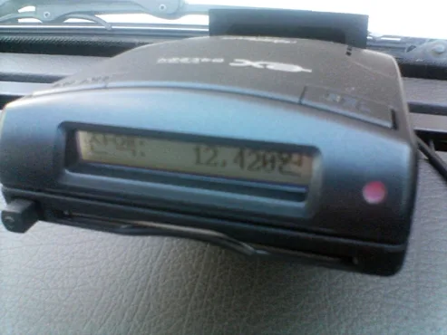
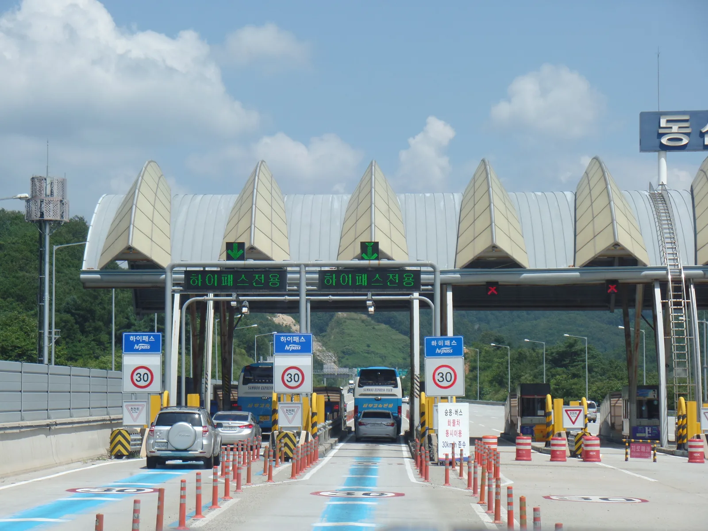
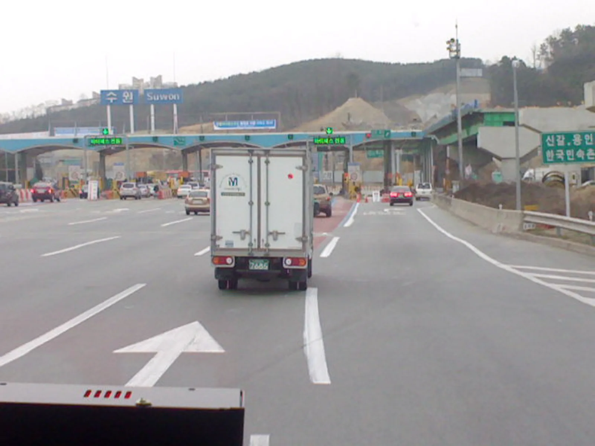

▲ 하이패스 단말기(OBU)는 통행료를 자동으로 결제하지만, 카드 접점·배터리 문제로 오작동하는 경우가 적지 않다 ⓒ iTurtle, Wikimedia Commons (CC BY 3.0)
하이패스 차로를 지나는데 평소와 다른 '삐- 삐-' 경고음이 울리거나, 아예 아무 소리 없이 그냥 통과해버린 경험이 있을 것이다.
당황해서 갓길에 서거나 후진하는 것은 절대 금물이다. 일단 정상 속도로 통과한 뒤 무슨 일이 있었는지, 그리고 어떻게 처리해야 하는지 순서대로 확인하면 된다.
1. 왜 인식이 안 될까 — 흔한 고장 유형 3가지
하이패스 오작동은 원인이 제각각처럼 보이지만, 실제로는 크게 세 가지로 나뉜다. 카드 쪽 문제, 단말기 본체 문제, 그리고 통신(무선기지국) 문제다. 이 중 압도적으로 많은 것은 카드 접점 불량이다.
| 유형 | 증상 | 원인 |
|---|---|---|
| 카드 인식 오류 | "카드를 확인하세요" 안내음, 무반응 | IC칩 접점 오염·먼지, 카드 자체 손상, 카드 유효기간 만료 |
| 스피커(알림음) 고장 | 결제는 되는데 안내음이 안 나옴 | 단말기 스피커 부품 노후·고장 |
| 배터리·안테나 방전 | 전원 램프가 아예 안 들어옴, 시간이 자주 초기화됨 | 내장 배터리 수명(보통 3~5년) 소진 |
📍 카드 인식 오류와 알림음 고장은 다르게 대응해야 한다
결제 자체가 안 되는 카드 인식 오류는 방치하면 매번 미납이 쌓이므로 빠른 확인이 필요하다. 반면 알림음만 안 나오는 스피커 고장은 결제는 정상적으로 이뤄지는 경우가 많아 급하지 않지만, 결제 여부를 눈으로 확인하는 습관이 필요하다.
2. 미인식으로 그냥 지나갔다면 — 통행료는 어떻게 처리되나
하이패스 차로는 카메라로 차량번호를 자동 인식하도록 설계돼 있다. 단말기가 결제에 실패해도 차량번호는 대부분 기록되기 때문에, 일부러 도망치듯 통과할 필요가 없다.
✅ 미납 통행료 처리 절차
· 통과 후 통상 1주일 이내에 등록된 연락처로 문자메시지 또는 우편으로 미납 안내가 온다
· 통지를 기다리지 않고 먼저 조회하고 싶다면 하이패스 홈페이지의 비회원 미납통행료 조회 메뉴나 정부24에서 차량번호로 확인할 수 있다
· 납부 수단은 후불 하이패스 카드, 계좌이체, 신용카드, 가상계좌, 카카오페이·네이버페이 등 다양하다
· 가까운 영업소·휴게소에서 현장 납부도 가능하다
본인 차량의 미납 내역과 납부 방법은 하이패스 홈페이지에서 바로 확인할 수 있다. 미납통행료 조회·납부 바로가기

▲ 하이패스 차로는 차량번호 자동 인식 카메라도 함께 운용돼, 단말기 오류가 있어도 대부분 기록이 남는다 ⓒ Wikimedia Commons
📍 부가통행료(최대 10배)는 언제 부과되나
유료도로법 제20조 및 시행령에 따라 부가통행료가 부과될 수 있지만, 이는 단말기 오류나 잔액 부족으로 한두 번 미납된 경우가 아니라 미납 통지를 무시하고 방치하거나 상습적으로 무단 통과할 때 적용되는 조치다. 안내에 따라 정상 통행료만 제때 납부하면 대부분 문제없이 정리된다.
3. 자가진단법 — 정비소 가기 전에 확인할 것
단말기를 뜯어서 고칠 필요는 없다. 다만 몇 가지만 확인해도 원인을 어느 정도 좁힐 수 있다.
✅ 집·차 안에서 바로 해볼 수 있는 점검
· 카드를 뺐다가 다시 꽂아본다 — 접촉 불량이면 이것만으로 해결되는 경우가 많음
· 카드 IC칩 단자를 면봉+알코올로 살살 닦는다 — 먼지·이물질로 인한 인식 불량의 대표적 해결법
· 단말기 전원 램프 색상을 확인한다 — 램프가 아예 안 들어오면 배터리 방전이나 본체 불량 가능성
· 카드 유효기간을 확인한다 — 만료된 카드는 아무리 청소해도 인식되지 않음
· 위 조치 후에도 반복되면 단말기 본체 문제일 가능성이 높음

▲ '하이패스 전용' 차로 진입 전 결제 여부가 불확실하다면 속도를 줄이지 말고 그대로 통과한 뒤 확인하는 것이 안전하다 ⓒ Jhcbs1019, Wikimedia Commons (CC BY-SA 4.0)
4. 교체·AS는 어디로 가야 하나
하이패스 단말기 A/S 책임은 한국도로공사가 아니라 단말기 제조사에 있다. 단말기 이용약관상 A/S는 제조사가 정한 품질보증서를 따르기 때문이다.
| 구분 | 내용 |
|---|---|
| 문의처 | 도로공사가 아닌 단말기 제조사 고객센터로 문의 |
| 보증기간 내 | 무상 수리·교체가 원칙 |
| 보증기간 후 | 스피커 등 부품 교체 약 2~3만원, 본체 교체 약 4~5만원 선(제조사·모델별 상이) |
| 신규 단말기 등록 | 하이패스 홈페이지 또는 판매점에서 차량번호·카드 정보 등록, 대부분 즉시 처리 |
| 명의·차종 변경 | 하이패스 홈페이지 '차종 및 명의변경' 메뉴에서 처리 가능 |
단말기 A/S 안내와 등록 절차는 하이패스 공식 홈페이지에서 확인할 수 있다. 단말기 A/S 안내 바로가기
5. 무선기지국(RSE) 오류인지, 내 단말기·카드 문제인지 구분하는 법
하이패스 차로에는 차량에 부착된 단말기(OBU) 외에도, 요금소 게이트 쪽에 설치된 무선기지국(RSE, Road Side Equipment)이 함께 통신하며 결제를 처리한다. 미인식의 원인이 내 차량 쪽(카드·단말기)인지 도로 시설 쪽(RSE)인지에 따라 대응이 달라진다.
| 구분 | 단서 |
|---|---|
| 단말기·카드 문제 | 어느 요금소를 가든 반복적으로 미인식이 발생, 전원 램프·안내음 등 단말기 자체 이상 동반 |
| RSE(시설) 문제 | 특정 요금소·특정 차로에서만 다발적으로 발생, 앞뒤 다른 차량도 함께 미인식되는 정황 |

▲ 특정 요금소·차로에서만 반복적으로 미인식이 발생한다면 개인 단말기보다 시설 쪽 문제일 가능성도 열어둬야 한다 ⓒ P.Cps1120a, Wikimedia Commons (CC BY-SA 3.0)
📍 원인 판단이 애매하면 직접 문의가 정확하다
RSE 오류인지 개인 단말기·카드 문제인지는 주행 중 운전자가 스스로 완벽히 구분하기 어렵다. 미납 통지를 받았는데 원인이 납득되지 않는다면, 통지서에 안내된 절차로 이의 제기·문의를 하거나 한국도로공사 콜센터(1588-2504)로 상황(요금소명·시간·차로)을 구체적으로 설명하고 확인을 요청하는 것이 가장 정확하다.
6. 요약 — 순서대로 확인하면 된다
하이패스 차로에서 인식이 안 됐다면, 첫째 절대 후진·급정거하지 말고 정상 통과한다. 차량번호는 대부분 자동 기록되므로 1주일 내 미납 통지가 오고, 정상 통행료만 납부하면 대개 문제없이 끝난다. 방치·상습 미납만 부가통행료(최대 10배) 대상이 된다.
둘째, 흔한 고장은 카드 접점 불량이 가장 많다. 카드 재삽입, IC칩 청소, 전원 램프 확인만으로도 원인을 어느 정도 좁힐 수 있다. 해결되지 않으면 도로공사가 아닌 단말기 제조사에 A/S를 문의해야 한다.
셋째, 특정 요금소에서만 반복적으로 문제가 생긴다면 개인 단말기보다 무선기지국(RSE) 쪽 문제일 가능성도 있다. 원인이 애매하면 미납 통지서의 절차대로 문의하거나 도로공사 콜센터로 확인하는 것이 가장 확실하다.